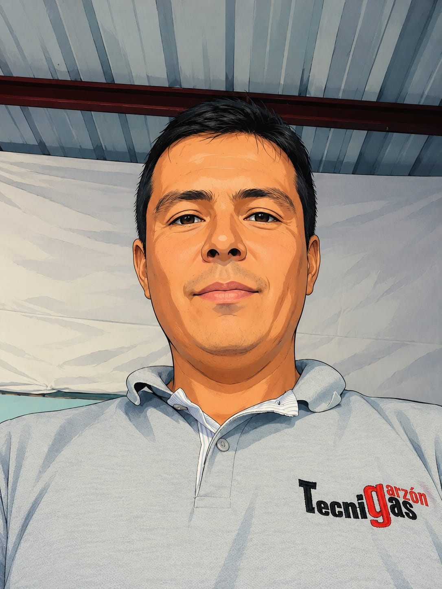

TecniGas Garzón es una microempresa liderada por Daniel Hernando Cediel, técnico especializado en instalaciones de gas, calentadores y certificaciones.
Con más de 20 años de experiencia, hemos trabajado con cientos de familias y negocios ofreciendo soluciones seguras, eficientes y confiables.
Nuestro compromiso es garantizar instalaciones realizadas bajo normas técnicas, priorizando siempre la seguridad y satisfacción de nuestros clientes.
Años de experiencia
Instalaciones realizadas
Compromiso y calidad
Trabajamos siguiendo normas técnicas.
Cumplimos con cada trabajo acordado.
Más de dos décadas de experiencia.